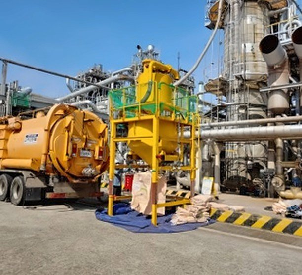
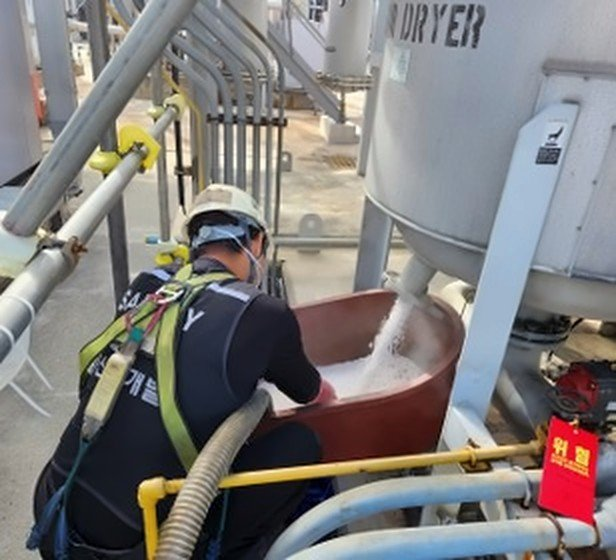
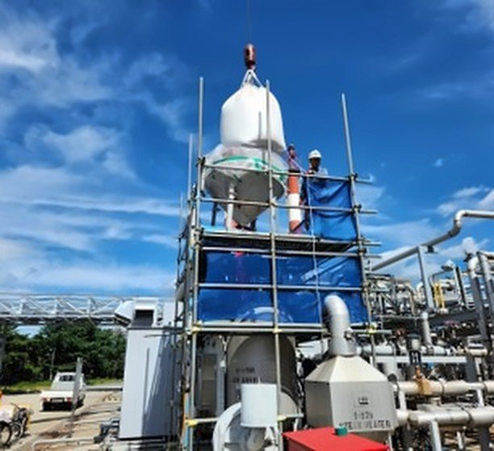

사업분야 · EQUIPMENT CLEANING (CATALYST)
촉매·충진물 작업
Reactor·Tank 내부의 촉매·충진물을 제거하고 교체합니다. 질소 분위기와 방폭 지역 조건에 맞춘 장비를 운용하고, 흡입·분리·원격 모니터링 시스템을 함께 구성합니다.
흡입 로봇 · 분리장치 투입이 업무로 문의하기

- 작업 범위
- 촉매 제거·교체 · 충진물 제거·교체 · 흡착제·건조제 교체 · 하역·충진 관련 작업의 범위 상담
- 주요 장비
- 진공흡입차(건식) · 흡입 로봇 · 제어 차량 · 분리장치
- 작업 시기
- 정기보수 · 대정비 기간
어떻게 하나요
작업 구성 흡입 · 분리 · 원격 모니터링
| 구성 | 위치 | 역할 |
|---|---|---|
| 로봇 | 설비 내부 | 잔여 위험 물질 회수, 전면부 Jet Nozzle로 내부 세척 |
| 제어 차량 (원격 조종·CCTV) | 설비 밖 | 작업자가 CCTV로 내부를 보며 로봇 조종 |
| 진공흡입차 | 설비 밖 | 호스로 연결해 회수물 흡입 |
| 분리장치 (Separator) | 설비 밖 | 촉매·충진물 작업에서 회수물 분리 |
기술소개서(2025) 18쪽 공사개략도(촉매)의 구성을 표로 옮김
폐기물 제거 작업 용도별 적용 예시
좋아지는 점
- 연속 작업 가능 — 조작자 교대, 장비 연속 가동
- 작업자 안전 확보 — 질식 위험, 위험물질 노출
- 질소 공간 무인 작업 가능
유의할 점
- 비산물 등에 따른 시야 저하 — CCTV 연동을 통한 시야 확보
- 인력작업 대비 작업효율 70% — 연속 작업을 통해 효율 확보
- 맨웨이(M/W) 한계: 최소 18″
적용 범위
- Reactor / Tank 내부(질소 분위기 포함) 충진물 제거 작업
- 방폭 지역 작업 가능
- 기타 설비 Sludge 및 고형 폐기물 제거 작업
기술소개서(2025) 12쪽 용도별 적용 예시 — 글 그대로
투입 장비
 로봇흡입 로봇보유 장비표: 무인준설로봇 흡입형무인 솔루션에서 보기
로봇흡입 로봇보유 장비표: 무인준설로봇 흡입형무인 솔루션에서 보기  장비제어 차량제어 차량 안에서 모니터를 보는 작업자들
장비제어 차량제어 차량 안에서 모니터를 보는 작업자들
장비진공흡입차 · 분리장치반응기 옆의 진공흡입차와 분리장치
현장 사진


일부 사진은 회사소개서(2024) 10~14쪽 주요사업 안내에 실린 사진입니다